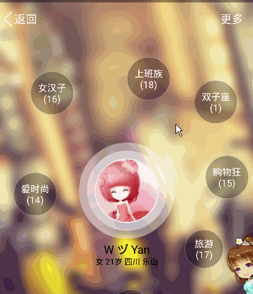
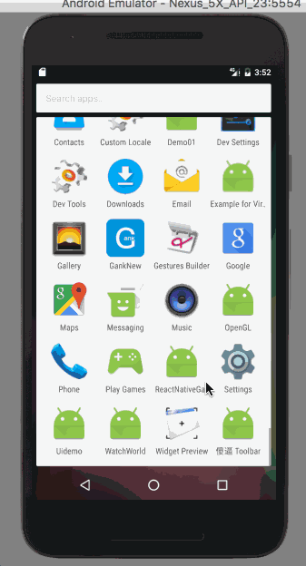

最近在一个项目中需要一个像QQ打开个人爱好那样的动画效果如下图:

可以看出每个小球都是以顺时针旋转出来的,说明像这样的曲线动画用Android中自带的平移动画是很难实现的。
Android5.0之后新增了很多好看的转场动画，相比于以前的overridePendingTransition()丰富了很多，特别新增了共享元素跳转的方式。本篇文章介绍转场动画框架的基本概念，并着手自己实现转场动画。
在很多视频播放器中，都存在使用不同的手势来控制进度、亮度\音量和暂停播放等功能。Android提供了一个GestureDetector来帮助我们识别一些基本的触摸手势（还有ScaleGestureDetector可以识别缩放手势），让我们很方便地实现手势控制功能。下面我们就来学习一下GestureDetector的使用和通过源码（Android7.0）来分析一下它的实现，让我们对触摸事件处理的理解更加深入。

android中在实际的视频开发中多用即成的框架,或者自己封装相关的Manager来实现;下面介绍一个简单的android视频开发的过程:
RxJava是非常热门的函数响应式编程库，在Android开发中已经非常流行了，刚开始上手会有点难，但只要理解了它，就再也回不去了；不使用RxJava写异步请求的话，就感觉各种不爽。
本文不准备讲RxJava的基础知识，如果你对RxJava不熟悉，这里有篇不错的教程可以参考《给 Android 开发者的 RxJava 详解》。
FloatingView-android能够让View执行漂亮的漂浮动画的库
消息推送在Android开发中应用的场景是越来越多了，比如说电商产品进行活动宣传、资讯类产品进行新闻推送等等。
本文将介绍Android中实现消息推送的7种主流解决方案。
« Prev Page
» Next Page
Android 随手记 服务器 C++ UI MySQL 算法 Game Python 跨平台开发
Copyright © 2015 Powered by MWeb, Theme used GitHub CSS.